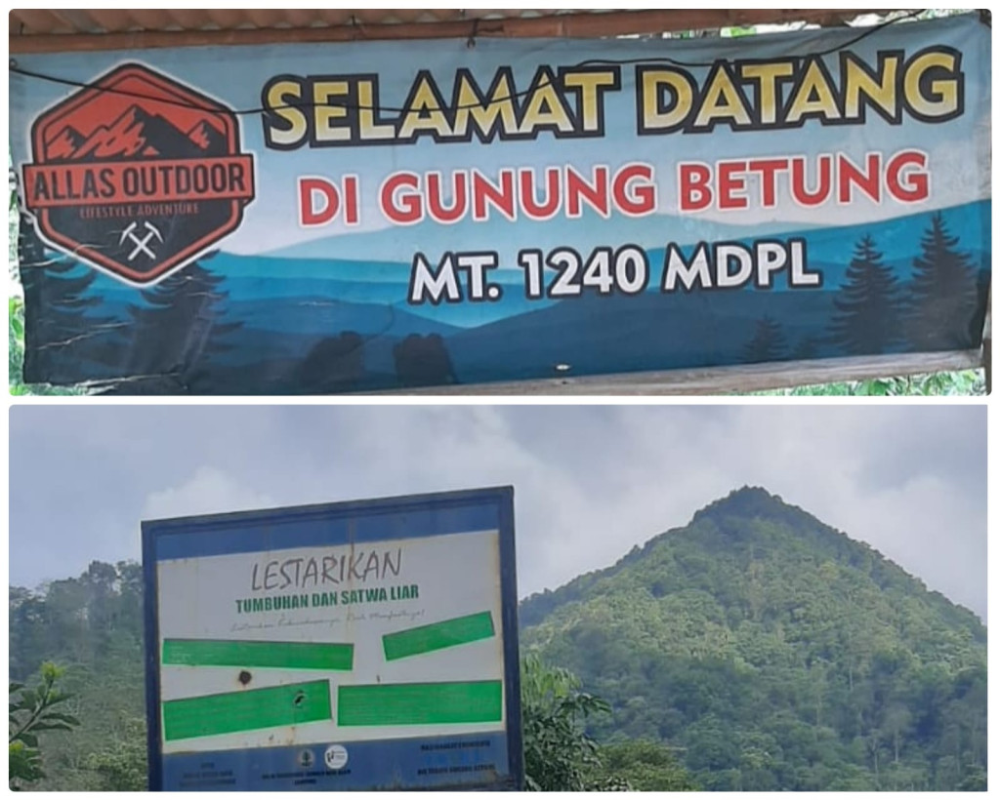
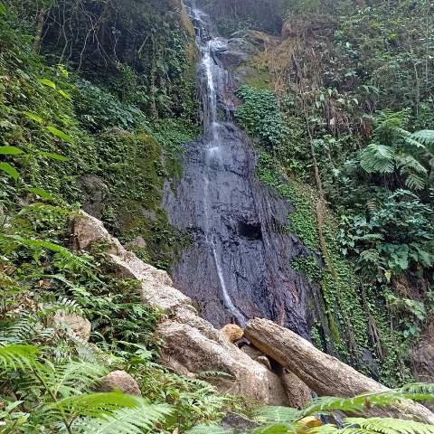
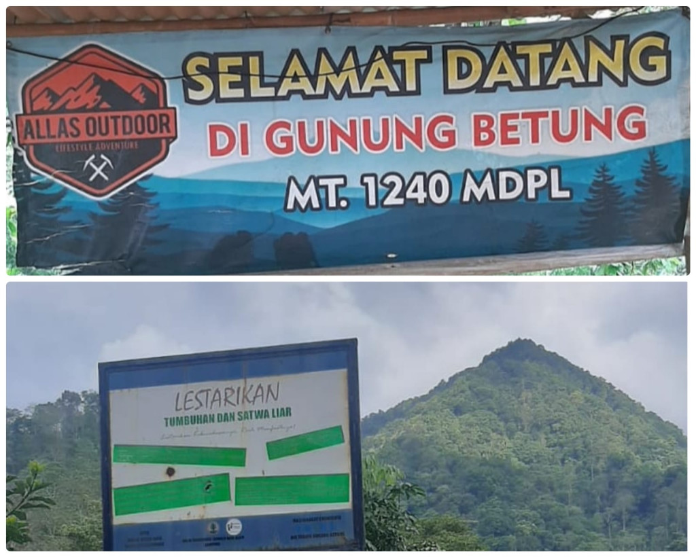
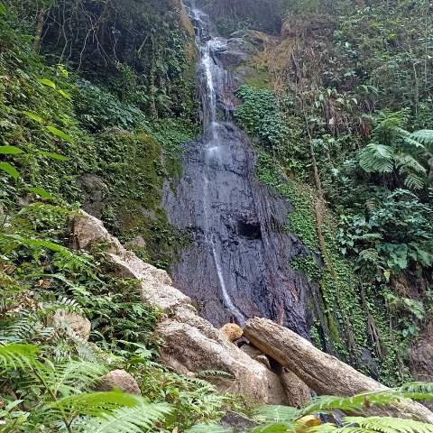

Lampung's Mountain Majesty: Exploring Nature's Paradise
Gunung Pesagi
Gunung Pesagi adalah gunung tak aktif salah satu dari 5 Gunung bersejarah yang ada di provinsi Lampung, Indonesia. Dari kelima gunung tersebut, Gunung Pesagi adalah gunung yang mempunyai puncak paling tertinggi yang ada di lemah Lampung (tanah Lampung). Ketinggian puncak dari Gunung Pesagi ini memiliki dua puncak tertinggi, puncak tertinggi pertama disebut Pesagi lunik (kecil) sedangkan puncak tertinggi kedua adalah Pesagi balak (besar), ketinggian dari pesagi lunik (kecil) 2.262 MDPL untuk ketinggian Pesagi balak (besar) mencapai 3.221 MDPL, Gunung ini merupakan titik tertinggi di Lampung, Di kaki gunungnini dipercaya sebagai lokasi Kebesaran tertinggi piramida kesultanan dengan sebutan lain Kepaksian yang merupakan pangkal keturunan Suku Lampung.

Gunung Tanggamus
Gunung Tanggamus adalah sebuah gunung yang terletak di Kecamatan Kota Agung, Kabupaten Tanggamus, Provinsi Lampung, Indonesia. Gunung ini berada di sebelah timur laut dari Kota Agung dengan jarak sekitar 10 km. Gunung ini adalah gunung tertinggi kedua di Provinsi Lampung, setelah Gunung Pesagi. Gunung ini sering didaki oleh komunitas pecinta alam seperti Mahasiswa Pencinta Alam Universitas Lampung (Unila) dan lain sebagainya atau para pendatang dari luar Lampung.

Gunung Rajabasa
Gunung Rajabasa adalah gunung berapi dengan kerucut vulkanik yang terdapat di Selat Sunda di bagian tenggara dari Sumatra, terletak di Kabupaten Lampung Selatan, Provinsi Lampung. Memiliki puncak kawah dengan lebar 500x700 meter dengan bagian daratan berawa, gunung berapi diselimuti dengan berbagai vegetasi. Walaupun aktivitas fumarol terjadi di bagian kaki dan lereng gunung. Terjadi kenaikan aktivitas yang dilaporkan terjadi pada April 1863 dan Mei 1892 serta tidak diketahui kapan terjadi erupsi. Gunung Rajabasa kurang lebih berjarak 5 km dari Kota Kalianda ke arah selatan, terletak tidak jauh dari pantai sehingga gunung ini bisa terlihat dari laut pada penyeberangan Pelabuhan Merak - Pelabuhan Bakauheni. Dari sisi kehutanan, masuk wilayah kerja Kesatuan Pengelolaan Hutan Lindung (KPHL) Unit XIII Lampung. Atau UPTD KPH XIII Gunung Rajabasa – Way Pisang – Batu Serampok. Di bawah kendali Dinas Kehutanan Provinsi Lampung. Dilihat dari topografi, Gunung Rajabasa memiliki dataran rendah, dataran rendah pedalaman, perbukitan rendah, perbukitan dan perbukitan tinggi. Sedangkan lerengnya memiliki area datar, miring, curam dan sangat curam.

Gunung Seminung
Gunung Seminung adalah gunung yang terletak di perbatasan Kecamatan Sukau, Kabupaten Lampung Barat, Provinsi Lampung, dengan Kecamatan Banding Agung, Kabupaten Ogan Komering Ulu Selatan, Provinsi Sumatera Selatan. Sama seperti Gunung Merapi, gunung ini merupakan "gunung antar-provinsi". Gunung ini berada di sebelah barat laut dari Kota Liwa dengan jarak sekitar 25 km. Kaki gunung ini berada di sebuah danau, yaitu Danau Ranau, yang juga merupakan sebuah "danau antar propinsi". Gunung Seminung ini memiliki pemandangan yang mempesona jika di lihat dari atas gunung tersebut.
 



Gunung Betung
Gunung berlokasi dekat Kota Bandar Lampung ini memiliki ketinggian 1.240 mdpl dan menjadi gunung yang cukup populer bagi para pendaki. Jalur pendakiannya pun tidak jauh berbeda dengan Gunung Rajabasa, mengingat tingginya pun hampir sama. Hanya saja iklim di Gunung Betung lebih lembab dan banyak binatang pacet serta sedikit licin jika hujan. Di gunung ini terdapat camp satu dan camp dua yang letaknya berdekatan. Untuk mencapai puncak, durasinya sekitar dua sampai tiga jam. Tiket masuk di Gunung Betung senilai Rp10 ribu per orang dan biaya parkir Rp5 ribu.